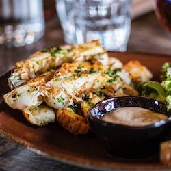
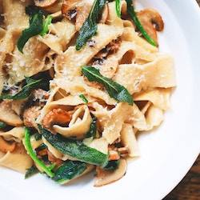
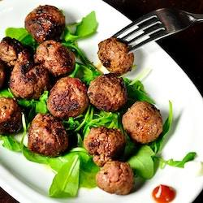
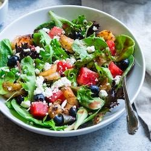
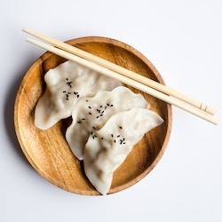
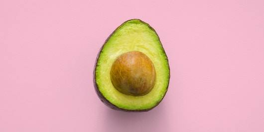

오시는 길 · 주차
매장 맛 그대로 포장.
$45 / $55
인천 구월에서 10년 동안 같은 자리. 단체 · 포장 · 예약 받습니다.
매장 맛 그대로 포장.
$45 / $55

주차 가능 대수와 대중교통 안내.
$65 / $70

가게를 대표하는 메뉴와 만드는 방식.
$30.50

인원 · 예산에 맞춘 코스 구성.
$25.50

국내산 재료 원산지 매장 게시.
$80.25

단체석 최대 40명.
$20 / $40 / $60

주차 8대 가능.
$94

인천 구월에서 10년 동안 같은 자리. 단체 · 포장 · 예약 받습니다.
$15

정성 밥집 구월점은 남동구에서 음식점 일을 하는 곳입니다. 인천 구월에서 10년 동안 같은 자리. 단체 · 포장 · 예약 받습니다.